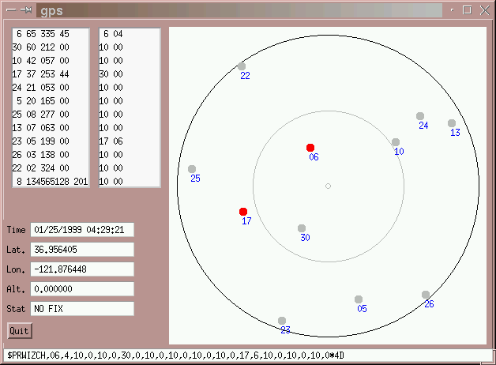
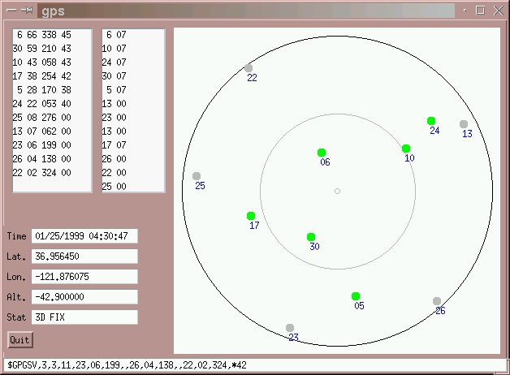

gpsd — a GPS service daemongpsd is a service daemon that monitors a GPS attached
to a host computer through a serial or USB port, making its data on
the location/course/velocity of the sensor available to be queried on
TCP port 2947 of the host computer. With gpsd, multiple
GPS client applications (such as navigational and wardriving software)
can share access to a GPS without contention or loss of data. Also,
gpsd responds to queries with a format that is substantially easier to
parse than the NMEA 0183 emitted by most GPSes. The gpsd
distribution includes a linkable C service library and/or a Python
module that developers of gpsd-aware applications can use
to encapsulate all communication with gpsd.
The goal of the gpsd project is to create a solid layer of
open-source infrastructure for programs that want to be
location-sensitive. We aim for simple, robust interfaces, unfussy
operation, and an easy learning curve for application developers.
Applications that presently use gpsd include
pyGPS,
Kismet,
GPSdrive, and
gpeGPS.
Note: As of mid-October 2004, Kismet is currently not working well
with gpsd. The symptom is a "Lost GPS signal" shortly
after kismet startup. There is a workaround, which is to run
gpsd with the -n option. GPS interface code that works
with both old and new gpsd is already in the development branch of
Kismet and is intended to go into a future mainline release.
We have a list of compatible GPSses with some technical information. We also have a list of NMEA sentences.
If you are new to GPS technology and don't quite understand what
gpsd is about, you might find ESR's Guide to Hacking With GPS
interesting
Look in the download directory for tarballs of all released versions. Access to the bleeding-edge developer version is supported via Subversion. The main project page is here.
There are three project mailing lists:
gpsd, including support
for application builders using gpsd as a component.gpsd developers.The following manual pages describe the code:
gpsd daemon.gpsd to talk to a GPS.gpsprobe program for querying GPS capabilities.Note that these describe gpsd-2, not the 1.x versions you may have seen before.
Included in the package is a sample client called gps. It
connects to a gpsd at any host you tell it to, and
requests raw data, so that it can display the current location of all
visible GPS satellites your receiver 'sees'.

The GPS receiver has not yet acquired a fix. The receiver has not tracked the grey satellites, but knows where they should be.
The next image shows a good fix. A 3d fix provides latitude, longitude as well as altitude data, and requires at least four good satellites. A 2d fix does not give altitude, but only requires 3 satellites.

Depending on your GPS receiver, the additional satellites may be used to determine location with better accuracy.
gpsd also works with bluetooth
GPS receivers.
Robin Cull has a Gentoo Linux ebuild script.
There are two Linux-based forks of gpsd in the wild, but
there are plans to unfork at least one of them soon. You can read a brief history of the gpsd project if
you are curious.
There is a NavSys
project that includes a fork of gpsd called ngpsd. The developer
is now on the gpsd list and we plan an unfork.
There is a project called gps3d that ships a gpsd with similar goals to ours, but which appears to be an independent development. There haven't been any releases since early 2002.
There is a gpsd-like hack hosted under Microsoft
Windows. It provides gpsd service from data in netstumbler under
win32. This way programs such as JiGLE can still get gps data from
netstumbler. This program is not genetically related to
gpsd.
We aren't the Greenville Public School District or the Greater Peoria Sanitary District, nor do we have anything to do with the General Product Safety Directive.